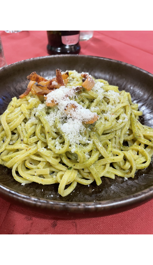
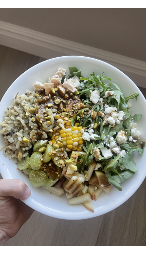

One of my favorite parts of life is food. There is such a big variety and you can explore so much with it. When I was younger, I did not appreciate the deliciousness of a good meal or snack, but as I have gotten older I most definiently do. I have a very big sweet tooth and I love to bake for me and my family and friends. When I am older I would love to do more things in the genre of food.
The Best Genres of Food
- Italian
- American
- Mexican
My favorite: Italian
Italian food is very deiverse and delicous based oh where and what you have. In 2025, I was able to go to Rome and Florence and got to try many authentic Italian foods. Some of my favorites that I have eaten are Margarita Pizza, Pistachio Pesto Pasta, and Bruscetta. Italian food orginated in about 400 BC, but as it has gone through time it has changed. Italian food is mainley simple, high quality ingredients and a great example of a meditarian diet. It encompassed citrus, fish, and lots of carbs. In Italian cuisine, they use a lot of cheese, olive oil, and tomatoes. As Rome has gotten more globalized, there had been more resturaunts that are not fully Italian. There are Mc. Donalds and Burger Kings and even bugers on the menu As you can see, Italian food is rich in traditions ans well as flavors.
 The top image was taken by me in rome of Pistachio pesto Pasta, and the bottom image is of a bowel I made over the summer.